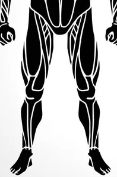
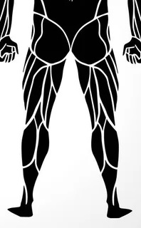

Alsó


Quadriceps (Comb elülső része)
Hamstring (Comb hátsó része)
Gluteus maximus (Fenékizom)
Gluteus medius (Középső fenékizom)
Gluteus minimus (Alsó fenékizom)
Adductor izmok (Belső comb)
Abductor izmok (Külső comb)
Vádli (Gastrocnemius és Soleus)
Tibialis anterior (Elülső lábszárizom)
Peroneus izmok (Szárkapocs izmai)
Flexorok (Térdhajlítók)
Extensorok (Térdnyújtók)
Popliteus (Térdhajlító izom)
Iliopsoas (Csípőhajlító izmok)
Rectus femoris (Comb középső része)
Vastus lateralis (Comb külső része)
Vastus medialis (Comb belső része)
Vastus intermedius (Comb középső izom)